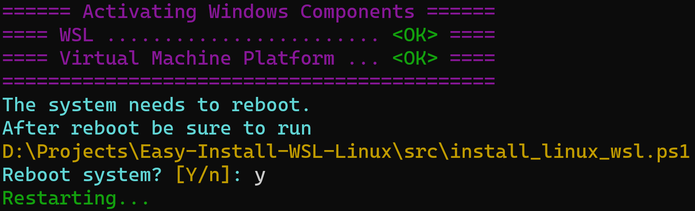
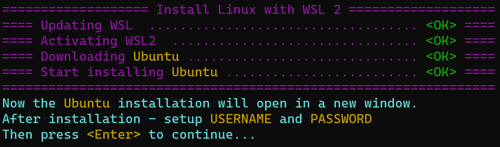
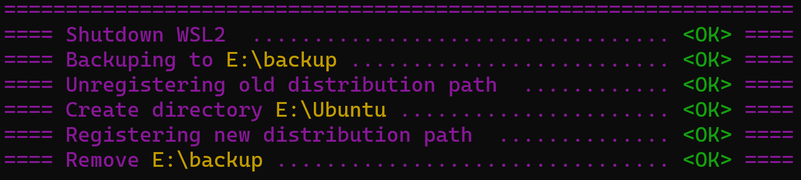
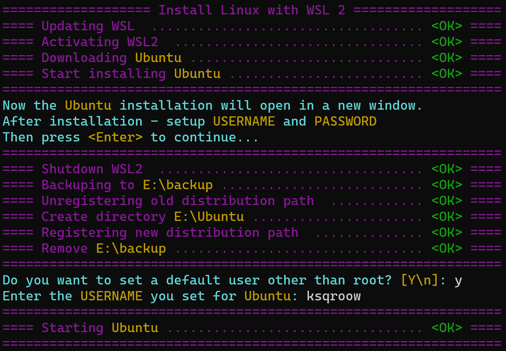

Tutorial
Clone project¶
Note
If for some reason you cannot use git, then you can simply download the .zip archive and unzip it.
Preparing Windows Components¶
Before run scripts
By default, Windows tries to protect you from calling any PowerShell scripts, because Windows ethos doesn't allow normal users to use scripts.
But in this case, all the functionality is written in PowerShell and you need to run these scripts...
Set-ExecutionPolicy Unrestricted (1)
- If you are very worried, then after installing the Linux distribution (after calling
install_linux_wsl.ps1), you can roll back theExecutionPolicyon your system.- Open PowerShell as administrator
- Execute
Set-ExecutionPolicy Default
- This PowerShell script will activate WSL and Virtual Machine Platform
Example output after running prepare_win_components.ps1

Installing Linux¶
.\install-wsl\src\install_linux_wsl.ps1 -Path E:\Ubuntu -Dist Ubuntu
| Param | Required | Default | Description |
|---|---|---|---|
Path/InstallPath |
Linux installation path | ||
Dist/Distribution |
Ubuntu | Distribution name |
Valid values for Dist/Distribution
Ubuntu, Ubuntu-18.04, Ubuntu-20.04, Ubuntu-22.04, Debian, kali-linux, OracleLinux_7_9, OracleLinux_8_7, OracleLinux_9_1, openSUSE-Leap-15.5, SUSE-Linux-Enterprise-Server-15-SP4, SUSE-Linux-Enterprise-15-SP5, openSUSE-Tumbleweed
Downloading and Installing¶
Note
In general, everything that will be described below will only tell you what the script does. If you are a confident person, then you don’t need to read further, just run the script.
First of all, the script will download the selected Linux distribution and begin installing it.
Do not worry!
You will definitely notice the installation in a separate window, and you will know exactly where you need to enter the username and password.
Example of the 1-st part of the output after running install_linux_wsl.ps1

Moving¶
Next, a couple of manipulations will be carried out with your distribution so that it ends up in the directory you need.
Example of the 2-nd part of the output after running install_linux_wsl.ps1

Starting¶
Bonus for Ubuntu
If you are installing the Ubuntu distribution, then as a bonus (1) you will be asked to set a default user (so as not to constantly log in as root).
- In fact, at the moment the default custom setting only works correctly for the Ubuntu distribution.
Of course, you should enter the user that was created when installing the distribution.
And finally, your distribution will be launched.
My pleasure.
Example of the final part of the output after running install_linux_wsl.ps1

Example of the full output after running install_linux_wsl.ps1
